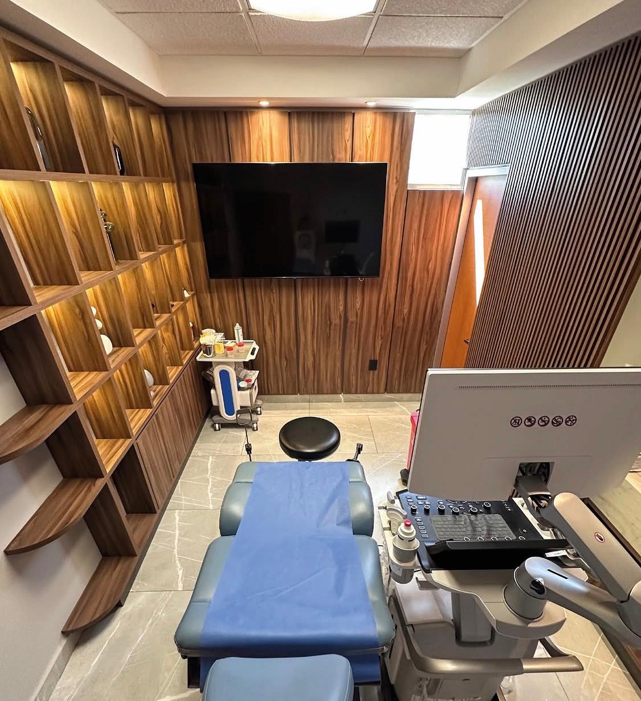

Ultrasonido Primer Trimestre
Estudio especializado entre las 11 y 14 semanas para conocer cómo va evolucionando tu bebé desde etapas tempranas. Permite definir edad gestacional, identificar embarazo único o múltiple y evaluar marcadores de riesgo de alteraciones cromosómicas.
Ver detalles del servicio →